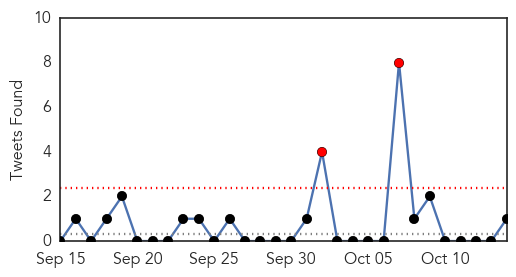

30 Day Trends
Web: 0 alerts, 0 warnings
Twitter: 1 alerts, 0 warnings
Top Articles:
- 0.972
- Flu season starting strong in Washington state - Local News
- 0.969
- Two-year-old girl dies of meningococcal in north Queensland
- 0.917
- Chicago Tribune
- 0.917
- Chicago Tribune
- 0.917
- Chicago Tribune
- 0.917
- Chicago Tribune
- 0.917
- Chicago Tribune
- 0.917
- Chicago Tribune
- 0.917
- Chicago Tribune
- 0.917
- Chicago Tribune
- 0.917
- Chicago Tribune
- 0.917
- Chicago Tribune
- 0.917
- Chicago Tribune
- 0.917
- Chicago Tribune
- 0.917
- Chicago Tribune
- 0.917
- Chicago Tribune
- 0.913
- Study shows a do-it-yourself flu vaccine works
- 0.907
- Identifying and Managing Potential Cases of Enterovirus D68 Infection
- 0.866
- Hong Kong police shown in video of alleged beating to be removed from positions
- 0.866
- Obama, Japan PM discussed Ebola, TPP by phone
- 0.866
- Tropical Storm Ana is seen in a NOAA satellite image
- 0.866
- Donovan, director of the White House's Office of Management and Budget,listens to a question at the Reuters Global Climate Change Summit in Washington
- 0.866
- U.S. Navy Rear Admiral White answers questions from reporters during the Reuters Global Climate Change Summit in Washington
- 0.866
- "No discrepancy" between U.S. and Turkey over Islamic State-Kerry
- 0.866
- A baby pig stands in a pen on a small farm outside of Calgary Alberta
- 0.866
- Rabinovitch, global director of Sustainability for global food manufacturer Mars, Inc, answers questions from reporters during the Reuters Global Climate Change Summit in Washington
- 0.866
- Ukraine parliament approves Poroshenko's choice for defence minister
- 0.866
- "Tsunami waves" possible after El Salvador quake, warning center says
- 0.844
- First Australian dies from drug resistant tuberculosis in Queensland
- 0.838
- Seven Salmonella Cases Confirmed After North Carolina Church Conference
- 0.825
- Human Papillomavirus Vaccines Offer Public Health Opportunity For Texas
- 0.814
- Kala-azar kills 150 people in South Sudan: UN
- 0.808
- Salmonellosis outbreak linked to North Carolina church conference
- 0.792
- Genes pinpoint cause of mystery fevers
- 0.784
- Madison County Health Department holding flu shot clinics this week
- 0.780
- EU Commission to cover 75% of costs for measures to combat African swine fever :: The Baltic Course
- 0.759
- Patient infections close operating rooms at Mission Hospital; accreditation in jeopardy
- 0.739
- Genetic Resistance to Rotavirus Reduces Vaccine Effect
- 0.736
- the edge of knowledge
- 0.730
- New Strategy for the Prevention and Control of African Swine Fever in China
- 0.719
- Scope disinfection failure suspected in superbug cluster, leads UPMC to alter methods
- 0.686
- Woman dies from drug resistant strain of tuberculosis in Cairns
- 0.680
- Some hospitals no longer testing for enterovirus-68
- 0.676
- Student's reported illness prompts Peoria school cleaning
- 0.670
- 6 Ways to Stay Healthy During Cold and Flu Season
- 0.668
- Portage's Haverhill Elementary sees more absences after report of enterovirus; health department says case does not look like the D-68 strain
- 0.643
- Clinton Township, MI Dentist, Dr. Michael Aiello Encourages Better Oral Health this Month by Educating People on a Minimally Invasive Laser Gum Disease Treatment
- 0.629
- Digging into potentially long-lasting impact of enterovirus
- 0.620
- Poop Pills May Offer A Better Way To Eradicate This Deadly Infection
- 0.587
- Stories tagged with "Somalia"
Showing top 50 articles...
Top Tweets:
- 0.869
- el hecho de que no conteste el mensaje de texto en un segundo no quiere decir que estoy pichando 😒 sencillamente estoy ocupada
- 0.688
- Trivia Tuesday: The most recent flu pandemic was the Hong Kong Flu in 1968-69, which registered as a Level 2 on the Pandemic Severity Index.
Web/News Articles

Tweets
Article Locations

Article Confidences